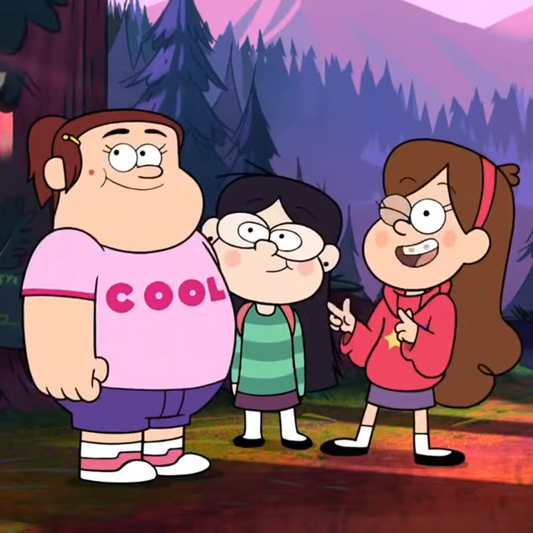

my blog
Friendship Club!
You know what's better than a secret club? A FRIENDSHIP CLUB! Candy, Grenda, and me - MABEL have the best friendship club. To be a member, you have to know all the ins and outs of being a best friend.

Customized Hugs
What are you saying with your hugs>
A on-armed hug means, "Oh, hi, hey, what's up, casual acquaintance?" A pat on the back with wide-open eyes is a hug usually reserved for an awkward sibling hug.
To show you really mean your friendship, use both arms and add a customized flourish to show you really care: a quick double squeeze, a calming back scratch mid-hug, or a vice-like bear hug are all great customizations!
Spit Sisters
It's like being blood brothers, but for girls. You and your friend each spit into your hands and then shake hands together, sealing your friendship in saliva. Then you immediately wash your hands, 'cause you've got spit all over them. Gross.
Sassy Sayings
Whut up, gurrrl? Why you ackin' so cray cray? Uh-UH! Oh heck no fo' sho', yo! Use these or make up your own. It doesn't matter if what you're saying actually means anything, as long as it's fun to say!
FRIENDSHIP BRACELETS!
let the world know who your best friend is by making them a friendship bracelet!